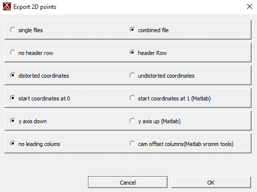
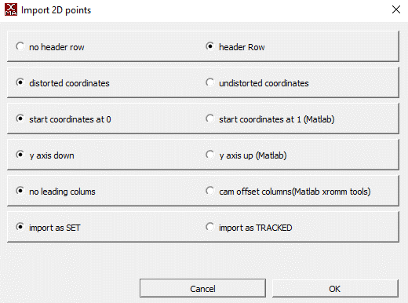

Usage Guide
There are two ways to use this package. You can either:
- Follow the usage guide below to run everything locally.
Getting started and creating a new project
- If you haven't already, follow the steps in the installation guide to install this package!
- Activate your conda environment
- Open an interactive Python session
- From the terminal, run the following commands (replacing
/path/to/project-folderwith the path to the folder for your project andSDwith your initials):from deepxromm import DeepXROMM working_dir = '/path/to/project-folder' experimenter = 'SD' # Basic usage deepxromm = DeepXROMM.create_new_project(working_dir, experimenter) # With custom tracking mode deepxromm = DeepXROMM.create_new_project(working_dir, experimenter, mode='per_cam') # With custom video codec deepxromm = DeepXROMM.create_new_project(working_dir, experimenter, codec='XVID') # With both custom mode and codec deepxromm = DeepXROMM.create_new_project(working_dir, experimenter, mode='rgb', codec='DIVX')
Available tracking modes:
2D(default): Combines camera data into a single DeepLabCut projectper_cam: Creates separate DeepLabCut projects for each camera viewrgb: Blends grayscale videos into RGB channels for single-network training
Configuration: For detailed information about each mode and related settings, see the mode parameter in the config file reference.
Video codec options:
avc1(default): H.264 codec, good balance of quality and compatibilityXVID,DIVX: Alternative compression codecsmp4v,MJPG: Other supported formatsuncompressed: No compression (large file sizes)
Note: Not all codecs are available on all systems. DeepXROMM will raise a
RuntimeErrorif the specified codec is unavailable.Configuration: For more details about codec options and system compatibility, see Video Codec Settings in the config file reference.
You should now see something that looks like this inside of your project folder:
⚠️ Warning: Keep your Python session open. We'll be running more commands here shortly
Exporting your data from XMAlab in a usable format
- DeepXROMM has built-in support for training data either as:
- Full distorted videos
- .tif/.jpg stacks (Functions are there, but untested as of mid-December 2025)
- Along with your distorted videos, DeepXROMM expects CSV training data (XMAlab 2D points) exported with the following settings 
Importing your data and loading the project
- The simplest approach is to create a new folder inside of the trainingdata folder named after your trial and place your raw videos, as well as distorted 2D points from tracking, in the folder.
- There are also a number of options for customization in the project_config.yaml file. Check out the config file reference to learn more about what each variable does
- After you have added the trainingdata and/or trial folders, make sure to load the project. You should also reload it every time you update any settings.
Converting XMAlab data to DeepLabCut format
- XMAlab and DeepLabCut both use CSV files (or a more data-rich format called HDF) as their primary means of storing tracking data. In order to train a network for XMAlab trials, we need to convert the XMAlab-formatted data exported in the previous step to a format that DeepLabCut can use. To do this, you can run:
deepxromm.xma_to_dlc()
```
## Creating a training dataset
1. Next, we'll use the DLC formatted data we just extracted and codify it as our training
data for this run of our model. To do this, you can run:
```python
deepxromm.create_training_dataset()
Training the project
- To start training your network, run the following in your Python terminal
Batch processing: To train multiple projects automatically, see Batch Training Multiple Projects.
Using a trained network to track your trial(s)
- Make sure any trials that you want to analyze are in appropriately named folders in the
trialsdirectory, and each folder contains a CSV and distorted cam1/cam2 videos that are named folder_name.csv, folder_name_cam1.avi, and folder_name_cam2.avi, respectively - Run the following commands in your Python terminal:
- This will save a file named trial_name-Predicted2DPoints.csv to the it# file (where number is the number next to iteration: in your project_folder/project-name-SD-YYYY-MM-DD/config.yaml file) inside of your trials/trial_name folder
- You can analyze the network's performance by importing this CSV as a 2D Points file into XMAlab with the following settings

Quality assessment: After analysis, use the methods in Advanced Analysis Methods to validate your results.
Converting DLC predictions back to XMAlab format
After analyzing your videos with the trained network, you may want to convert the DeepLabCut predictions back to XMAlab-compatible CSV format for import into XMAlab.
To convert predictions for all analyzed trials, run:
This will create *-Predicted2DPoints.csv files in each trial's iteration directory (e.g., trials/trial_name/it0/trial_name-Predicted2DPoints.csv). These files contain the network's predictions formatted with cam1/cam2 columns that XMAlab can import.
When to use this:
- After running analyze_videos() to get XMAlab-compatible output
- When you want to visualize network predictions in XMAlab
- Before importing predicted points into XMAlab for validation
Note: This step is automatically performed when using
train_many_projects()for batch processing.
You can then import these CSV files into XMAlab using the same import settings shown in the Using a trained network section above.
Batch Training Multiple Projects
For labs with multiple DeepXROMM projects, you can automate the entire training pipeline using the train_many_projects() static method.
Steps executed during a batch training session:
- Load each project configuration
- Convert XMAlab data to DeepLabCut format (
xma_to_dlc()) - Create training datasets (
create_training_dataset()) - Train neural networks (
train_network()) - Analyze videos with trained models (
analyze_videos()) - Convert predictions back to XMAlab format (
dlc_to_xma())
You can initiate a batch training session by running:
from deepxromm import DeepXROMM
# Point to parent directory containing project folders
parent_directory = '/path/to/parent/containing/projects'
DeepXROMM.train_many_projects(parent_directory)
Formatting your filesystem for batch training:
- Each subdirectory of the parent directory should be a complete DeepXROMM project
- Each project must have
project_config.yaml - Training data must be in
trainingdata/folders - Trial videos must be in
trials/folders
Important: This is a static method - call it directly on the
DeepXROMMclass, not on an instance.
Cross-reference: See individual workflow steps in sections above for details on each operation performed.
Using autocorrect()
This package comes pre-built with autocorrect() functions that leverage the same image filtering functions as XMAlab, and use the marker's outline to do centroid detection on each marker. You can modify the autocorrect function's performance using the image processing parameters from the config file reference. You can also visualize the centroid detection process using the test_autocorrect() parameters.
Testing autocorrect() parameters on a single marker/frame combination
You'll need a Python environment that is capable of displaying images, like a Jupyter Notebook, for these steps.
- Go to your project_config.yaml file
- Change the value of test_autocorrect to true by replacing the word "false" with the word "true", like this:
- Specify a trial (trial_name), camera (cam), frame number (frame_num), and marker name (marker) to test the autocorrect function on
- Import the package and initialize a deepxromm instance as above and run the following code snippet
- Tune autocorrect() settings until you are satisfied with the testing output
Using autocorrect for a whole trial
- If you tested autocorrect, set the test_autocorrect variable in your config file to false
- Import the package and initialize a deepxromm instance as a above and run the following code snippet
- This will save a file named trial_name-AutoCorrected2DPoints.csv to the it# file (where number is the number next to iteration: in your project_folder/project-name-SD-YYYY-MM-DD/config.yaml file) inside of your trials/trial_name folder
- You can analyze autocorrect's performance by importing this CSV as a 2D Points file into XMAlab with the following settings
Retraining the Model
Sometimes initial training isn't sufficient for the model to generalize to new data. When predictions are poor on novel trials, you can retrain by extracting problematic frames (outliers), tracking them in XMAlab, and incorporating them into a refined training dataset.
Workflow Overview
The retraining workflow follows these steps:
- Extract outlier frames from analyzed trials
- Track the outlier frames in XMAlab and export as CSV
- Merge the new data with your existing training dataset
- Retrain the network with the augmented dataset
Step 1: Extract Outlier Frames
After analyzing your trials, identify frames where the network performed poorly:
This creates outliers.yaml files in each trial's iteration directory (e.g., trials/trial_name/it0/outliers.yaml) containing frame numbers identified as outliers.
Advanced usage: You can pass additional parameters to customize DeepLabCut's outlier detection. These are passed directly to DeepLabCut's underlying function. See the DeepLabCut extract_outlier_frames documentation for available parameters.
Configuration: Outlier detection behavior is controlled by settings in project_config.yaml. See Augmenter Settings for details.
Step 2: Track Outlier Frames in XMAlab
- Review the frame numbers listed in
outliers.yaml - (Optional) Edit
outliers.yamlto include only the frames you want to track. To do this programmatically: - Track those frames in XMAlab for your trial
- Export the tracked data as CSV with the same settings from Exporting your data from XMAlab
- Save the CSV as
*outliers*.csvin the iteration directory: - Example:
trials/trial_name/it0/trial_name_outliers_tracking.csv
Note: As long as the CSV contains the word 'outliers', all lowercase, deepxromm will detect it and use it to add new data to the training dataset Note: The CSV can contain more frames than just the outliers—DeepXROMM will extract only the frames listed in
outliers.yaml.
Step 3: Merge Datasets
Incorporate the newly tracked outlier data into your training dataset:
This will:
- Merge outlier data with existing training data
- Increment the DeepLabCut iteration number
- Update
nframesin your config to include the new frames - Copy trial videos to
trainingdata/if they weren't already there
Parameters:
update_nframes(bool, default=True): Automatically update thenframesconfig valueupdate_init_weights(bool, default=True): Update initial weights to reference a previous training bout for transfer learning
After merging, reload your project to apply the updated configuration:
Step 4: Continue Training Pipeline
With the augmented dataset, continue through the standard training workflow:
deepxromm.xma_to_dlc()
deepxromm.create_training_dataset()
deepxromm.train_network()
deepxromm.analyze_videos()
deepxromm.dlc_to_xma()
The network will now train on both your original frames and the newly tracked outliers, improving performance on challenging cases.
Cross-reference: For configuration of outlier detection algorithms, see Augmenter Settings.
Choosing regions with high variation
One thing that has been previously shown to help with neural network performance is variation of movement. To assist with finding regions of maximal dissimilarity within trial videos, we developed an automated function finds the portion of your videos with the most movement. To change how large the region we find is, simply change the size of the sliding window to suit your tracking needs.
To use this function:
- Boot up your conda environment
- Import the package
- Load your project
- Run the following function
- Replace /path/to/your/trial with the folder where your raw videos are stored
- Replace size_of_window with how many frames you want to track
Advanced Analysis Methods
DeepXROMM provides several analysis tools to help you explore and validate your XMA project data, compare trials, and assess tracking quality.
Video Similarity Analysis
Project-Level Video Comparison
Analyze video similarity across all trials in your project using perceptual image hashing:
similarity_scores = deepxromm.analyze_video_similarity_project()
print(similarity_scores) # Dictionary with similarity metrics
Returns: Dictionary with similarity scores (0 = identical videos, higher values = more different)
Use cases: - Verify consistent camera positioning across trials - Identify outlier trials with different lighting or setup - Validate stereo camera alignment
⚠️ Warning: This method assumes all cam1/cam2 pairs in your project have the same relationship. Configure the
cam1s_are_the_same_viewparameter in your project config to control this behavior. See Video Similarity Analysis in the config file reference for details.
Trial-Level Video Comparison
Compare similarity between camera views for a specific trial:
similarity_score = deepxromm.analyze_video_similarity_trial()
print(f"Cam1/Cam2 similarity: {similarity_score}")
Returns: Float representing dissimilarity between the trial's camera pairs
Use case: Validate that your stereo camera setup captures appropriately different perspectives of the same scene.
Marker Trajectory Analysis
Project-Level Marker Comparison
Analyze marker movement patterns across all trials:
marker_similarity = deepxromm.analyze_marker_similarity_project()
print(marker_similarity) # Dictionary with marker trajectory metrics
Returns: Dictionary with trajectory similarity scores for each marker
Use cases: - Identify consistent vs. variable movement patterns - Detect trials with unusual marker behavior - Validate tracking consistency across experimental conditions
⚠️ Warning: Like video analysis, this assumes consistent cam1/cam2 relationships across all trials. Configure the
cam1s_are_the_same_viewparameter to control this behavior. See Video Similarity Analysis in the config file reference.
Trial-Level Marker Comparison
Compare marker positions between camera views for a specific trial:
marker_differences = deepxromm.analyze_marker_similarity_trial()
print(f"Mean position differences: {marker_differences}")
Returns: Mean coordinate differences between paired markers (cam1_X - cam2_X, cam1_Y - cam2_Y)
Use cases: - Validate marker tracking accuracy between camera views - Identify problematic markers or time periods - Assess stereo calibration quality
Utility Methods
Extract Marker Names from XMAlab Data
Programmatically retrieve bodypart/marker names from XMAlab CSV files:
marker_names = deepxromm.get_bodyparts_from_xma(
csv_path='/path/to/trial/data.csv',
mode='2D' # Match your project's mode (you can do this via deepxromm with deepxromm.config["mode"])
)
print(f"Found markers: {marker_names}")
Parameters:
- csv_path (str): Path to XMAlab 2D points CSV file
- mode (str): Should match your project mode ('2D', 'per_cam', or 'rgb'), but can be any valid mode
Returns: List of marker names found in the CSV file
Use cases: - Validate marker naming consistency across trials before training - Programmatically verify expected markers are present - Debug import/export issues
Cross-reference: Use with the data import workflow described in Importing your data and loading the project.